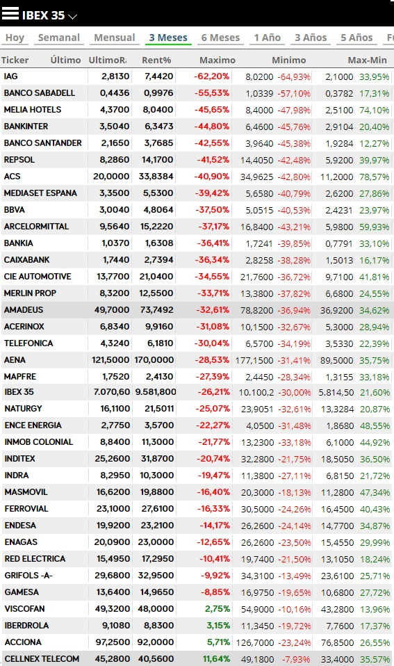
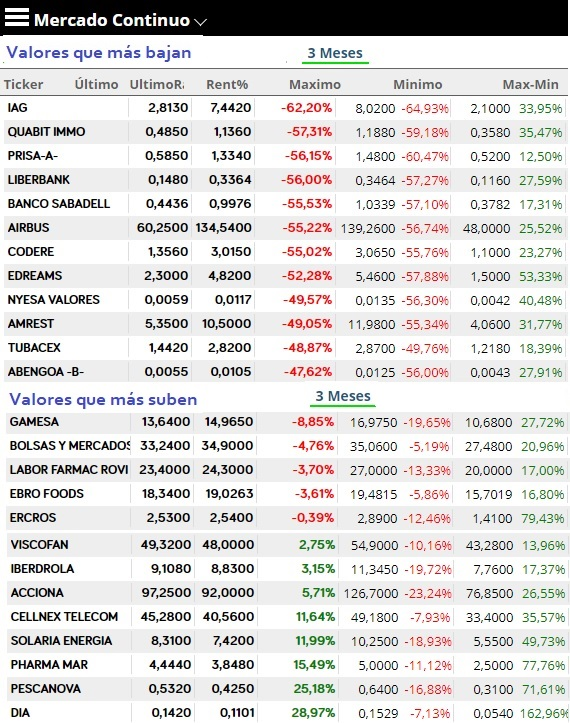
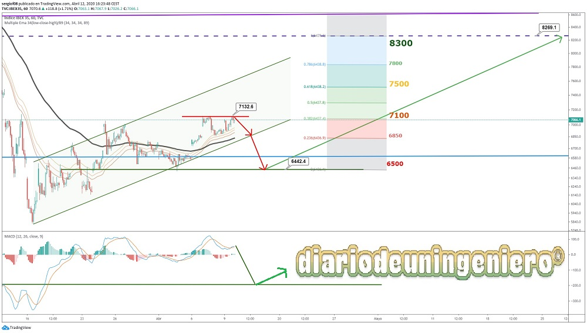

Since the financial crisis of 2008, all the indices have recovered the losses and have managed to exceed their maximums. In the case of the IBEX35, this is not the case if we do not count the dividends that companies give. The DAX30 for example counts these dividends in its index. However, the IBEX35 is the only almost minor recovery it has had. This is so due to the construction bubble, which was submerged for almost a decade, which made the rate of GDP growth and wealth of the country unreal. In addition, it has gone through other bad situations that are considered as small corrections to the index such as the brexit , the 2016 oil crisis , or instability due to the problem in catalonia where due to the obsolete Spanish electoral system a small part of the population of 5% can mark the road map of all Spaniards. This problem will always be exploited both by the Spanish right to sow hatred as well as by the Catalan bourgeoisie itself, which grows rich at everyone's expense. Two years of turbulence have come since 2017 due to this reason and aggravated by the results of the elections in 2019 that make the economy cannot take off again.
Once the financial crisis was over, Spain could hardly contain the second crisis, that of unemployment with unemployment rates well above any country in the euro zone, reaching maximums of 26% and in some areas in Spain this figure increased to more than 50% of the population. Once the end of the crisis has come, as shown in the graph, 6000 points would be touched. That minimum is decisive right now because it was outside the triangle that has followed these 10 years and is the one that will mark the new triangle to come. This is so because with COVID we have lost the support that was at 8700 points .
After the drop caused by the panic in the stock markets in general, with the coronavirus as the protagonist, the IBEX35 dropped almost half its value from highs, being close to 5,500 points.
The day after this fall, BME would announce the measure to ban short positions like other European countries that had previously done so. This would stop the indentation and cause the IBEX to experience a slight bounce around 6,000 points.
After a fast rebound that would be mainly influenced by the rebound of the American indices, it would stabilize around 6,400 points, building solid support. The most affected values would be airlines and banks, although almost all IBEX values would fall an average of 50%.
If we just carry out a detailed analysis and look at the comparative graph between mid-January and mid-April where chaos was still far from reaching Europe, we see how the companies that have suffered the most are banks, airlines and companies. tourism such as hotel chains and travel agencies. The strongest companies are those that were producing better results such as Iberdrola, Acciona and Gamesa . The latter were already quite expensive but they are very solvent and they are hardly affected by this crisis, so covid19 has been the perfect opportunity for many funds to increase their position. And it is that in periods of uncertainty it is best to be in solid positions.


Although if we ask ourselves where to invest when the crisis, that is, the coronavirus has disappeared and returns to normal, we will have to look for values that have dropped a lot because before the covid19 the accounts had not been good, or that they were in trouble financial or that the company's profit was linked to events that had not yet happened, that is, companies with uncertainty about their future. During the crisis it is seen that the only beneficiaries have been supermarkets which, due to the closure of restaurants and small shops, have kept all the market share. This is the case of , the true protagonist of COVID with an increase from 0.05 euros to the current 0.15 euros ( almost 200% profit from minimums ) as well as companies related to the healthcare or pharmaceutical sector such as Pharmamar.
In the short term I foresee as I had said at the beginning an imminent correction and later a slow rise. In the following graph I show how I see the possible rise after the rebound and correction.
If the confinement ends in May and economic activity resumes, a drop in GDP of around 15% could be expected this year, if it will last longer it may increase, although it will be necessary to count in summer to what extent it affects the one with the least foreign tourists. In the event that arrivals decrease by 50%, GDP could easily fall by 25% and Spain could enter a technical recession.
Being a mainly service country without great industrial activity like other countries around us, Spain is going to take a hard hit from this specific crisis, albeit much reduced this year.
It will be necessary to be attentive to the possible resistances given by fibonnaci and the possible steps that the index leaves as time goes by. The most possible is that next year if we grow again before, we can recover the value in less than 2 years. The worst of the crisis has already happened in Spain although it remains to be seen how it ends in the United States.
Regarding values to monitor, 7500 and 8300 as possible maximums until the end of the year, and around 7100, (current value as possible support).

By using this site you agree to our Terms and Conditions. Please Accept these before using the site.
© 2016 - All Rights Reserved - Diseñada por Sergio López Martínez
El sitio se mantiene gracias a la publicidad, por favor Desactiva Adblock para seguir navegando
He desactivado Adblock![[Valid RSS]](https://www.feedvalidator.org/images/valid-rss-rogers.png "Validate my RSS feed")